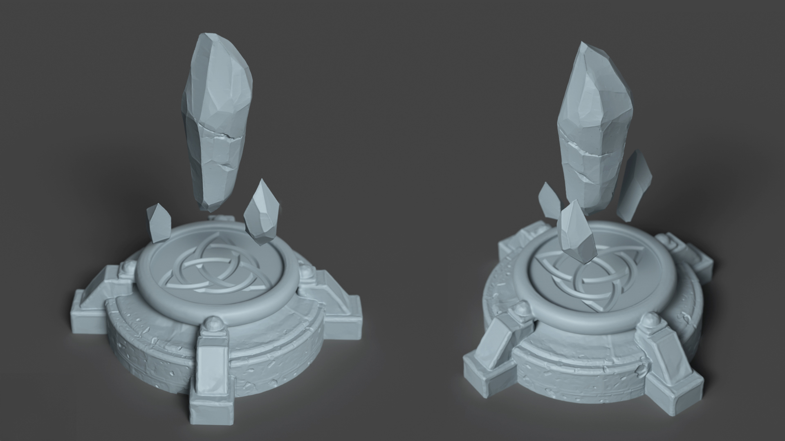
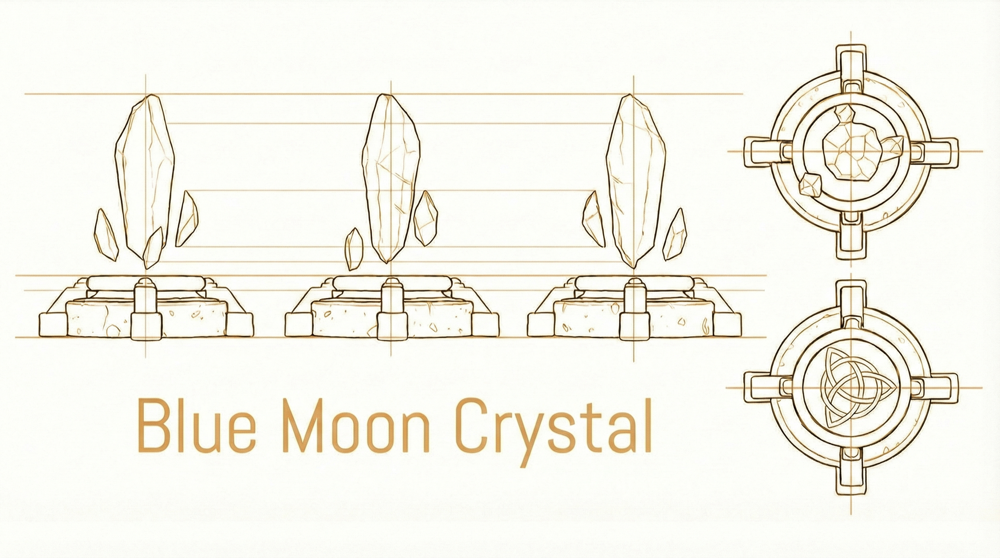

Blue Moon Crystal
3D Sculpting • Environment & Asset Creation • Retopology • UVs • Baking & Texturing
Nodal Material & Shader Creation • Rigging & Animation • Real-Time 3D • Camera & Video Editing


The Project
Created while working for Studio XP, this project began as part of an online course I developed to teach real-time 3D production to students aged 8 to 20 using free and open-source tools. After completing my assignment, I refined the crystal and designed a new course using Unreal Engine 5 to incorporate advanced real-time techniques. I sculpted, retopologized, and UV-mapped the crystal and its base in ZBrush, baked and textured it in Substance 3D, and created the terrain entirely in SideFX Houdini. I built the crystal's complex material entirely in Unreal Engine, designing every node and adjustment for a realistic ice-like appearance. I also created and placed Niagara FX around the base, rigged and animated the crystal in Blender, and finalized the sequence with Unreal Engine Sequencer and post-process effects in Adobe After Effects.